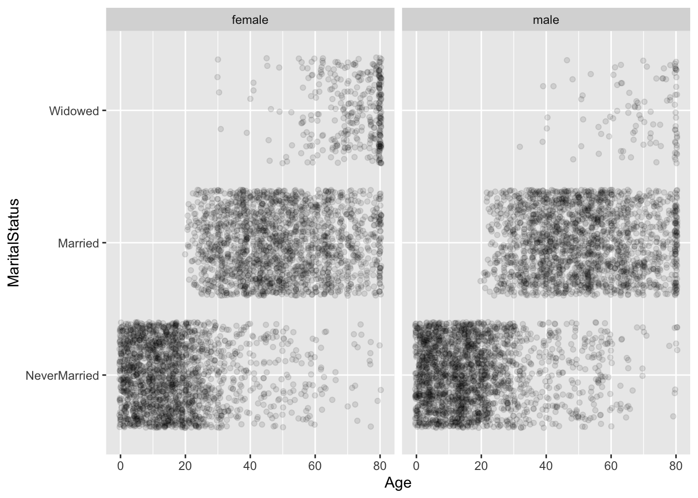
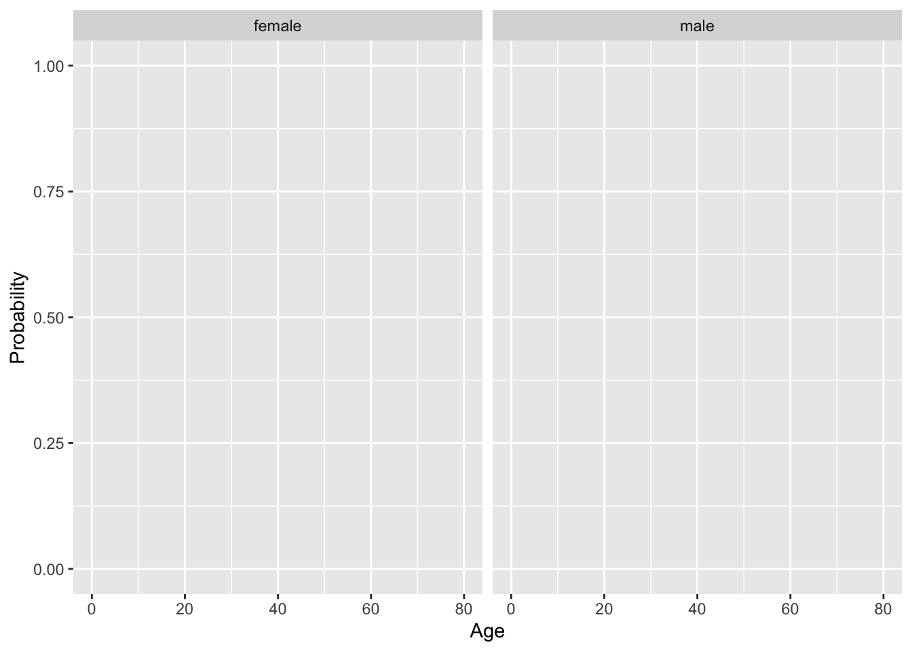
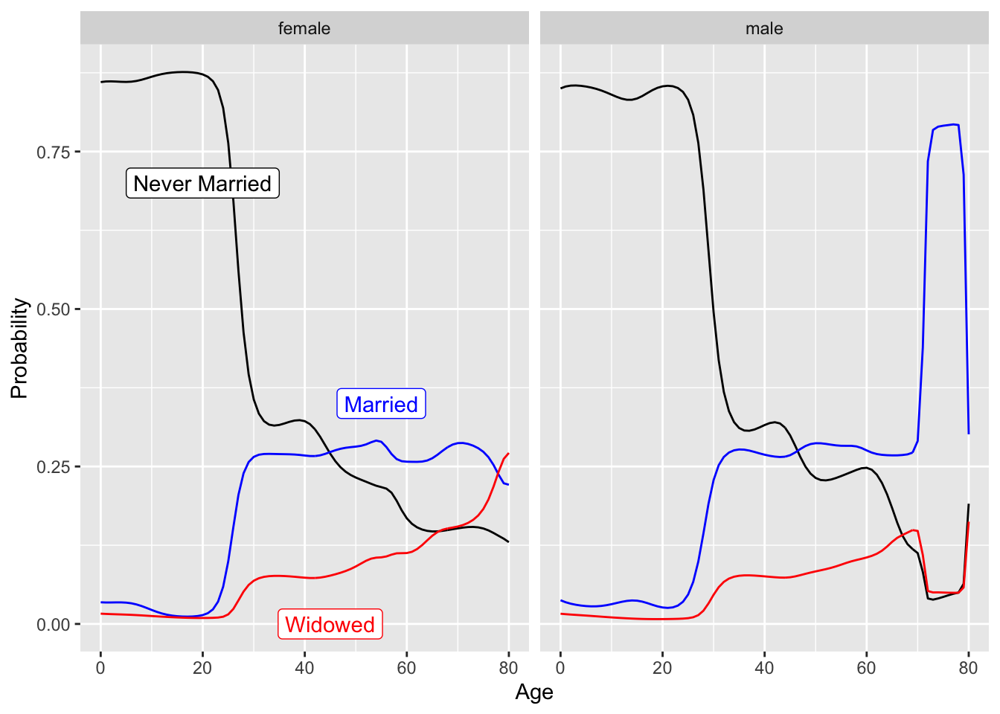
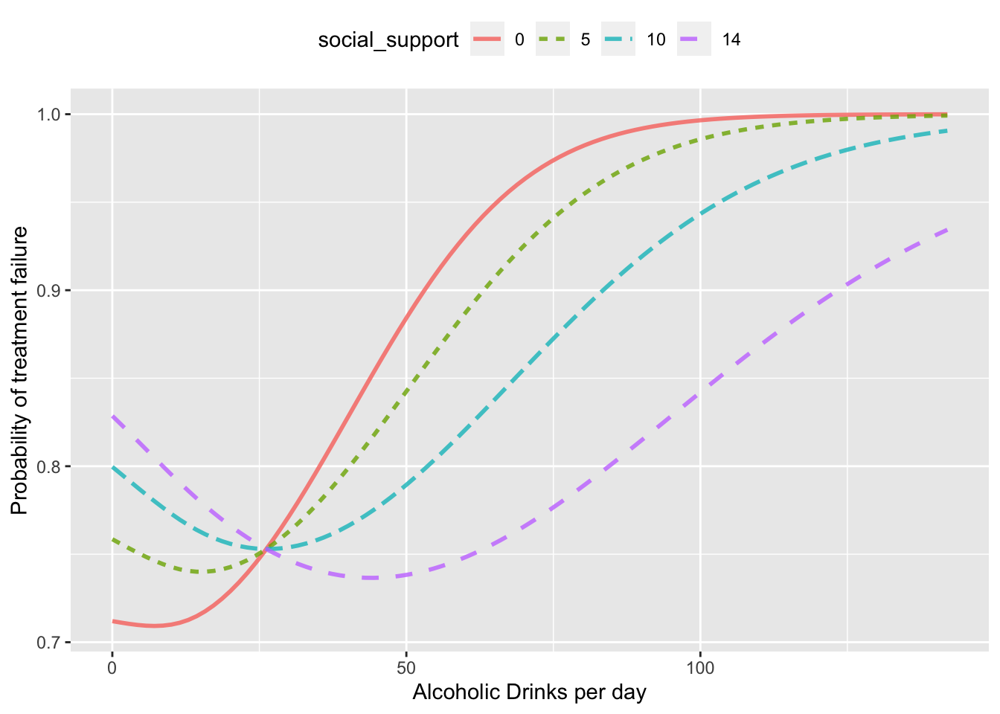

| species | size | color |
|---|---|---|
| A | large | reddish |
| B | large | brownish |
| B | small | brownish |
| A | large | brownish |
Learning Checks Lesson 34
Stat2Data::FaithfulFaces. Come back to it concerning prevalence.
34.1
To illustrate how stratification is used to build a classifier, consider this very simple, unrealistically small, made-up data frame listing observations of animals:
You are going to build classifiers using the data. The output of the classifier will be the probability that the species is A. The classifier itself will be a simple table: each row lists the different levels of the explanatory variable(s) the the classifier output (as a probability that the species is A).
- Use just
sizeas an explanatory variable. Since there are two levels for size, the classifier can take the form of a simple table, giving the proportion of rows for each of the two sizes. Fill in the table to reflect the data.
| size | prop_of_A |
|---|---|
| large | |
| small |
Solution
There are three rows where the size is large, of which one is species A. The classifier output is thus 2/3 for large.
Similarly, there is only one row where the size is small, none of which are species A. The classifier output is 0/1 for small.
- Repeat (1), but instead of “size”, use just “color” as an explanatory variable.
| color | prop_of_A |
|---|---|
| reddish | |
| brownish |
Solution
There are three rows where the color is brownish, of which two are species A. The classifier output is thus 1/3 for brownish.
There is only one row where the color is reddish, and it is species A. The classifier output is 1/1 for reddish.
- Again build a classifier, but use both color and size as explanatory variables.
| color | size | prop_of_A |
|---|---|---|
| reddish | large | |
| reddish | small | |
| brownish | large | |
| brownish | small |
Solution
There is just one row in which color is reddish and size is large, and it is species A. The classifier output is thus 1/1.
There are two rows in which color is brownish and size is large, one of which is species A. The classifier output is thus 1/2.
There is one row in which color is brownish and size is small. It is species B. The classifier output is 1/1.
There are no rows in which color is reddish and size is small. A classifier output of 0/0 is meaningless. So our classifier has nothing to say for these inputs.
- Finally, build the “null model”, a no-input classifier. This means there is just one group, which has all four rows. -A- Of the four rows, two are species A, so the classifier output is 2/4.
34.2
The graph below shows data on marital status versus age from National Health and Nutrition Evaluation Survey data. You can see that the probability of the various possibilities are a function of age.
Attaching package: 'kernlab'The following object is masked from 'package:mosaic':
crossThe following object is masked from 'package:scales':
alphaThe following object is masked from 'package:ggplot2':
alpha
A very simple classifier can be constructed just by indicating at each age which marital status is the most likely, as seen in the figure below.
maximum number of iterations reached -0.002303255 -0.002335247
A classifier output should be a probability, not a categorical level. On the blank graph below, sketch out a plausible form for probability vs age for each of three categorical levels shown in the above plot. (Hint: At an age where, say, “NeverMarried” is the categorical output, the probability for “NeverMarried” will be higher than the other categories.)

Presumably the probability output for each category varies somewhat smoothly. There are two constraints:
- At any age/sex, one probability will be the highest of the three. That one should correspond to the category shown in the first graph.
- The probabilities should add up to 1.
Here’s one possibility. Note that for females, the highest probability around age 80 is “widowed”.

From CPS §32.6: openintro::possum. Let’s investigate the possum data set again. This time we want to model a binary outcome variable. As a reminder, the common brushtail possum of the Australia region is a bit cuter than its distant cousin, the American opossum. We consider 104 brushtail possums from two regions in Australia, where the possums may be considered a random sample from the population. The first region is Victoria, which is in the eastern half of Australia and traverses the southern coast. The second region consists of New South Wales and Queensland, which make up eastern and northeastern Australia.
We use logistic regression to differentiate between possums in these two regions. The outcome variable, called pop, takes value Vic when a possum is from Victoria and other when it is from New South Wales or Queensland. We consider five predictors: sex, head_l, skull_w, total_l, and tail_l.
Explore the data by making histograms or boxplots of the quantitative variables, and bar charts of the discrete variables.
- Are there any outliers that are likely to have a very large influence on the logistic regression model?
- Build a logistic regression model with all the variables. Report a summary of the model.
- Using the p-values decide if you want to remove a variable(s) and if so build that model.
- For any variable you decide to remove, build a 95% confidence interval for the parameter.
- Explain why the remaining parameter estimates change between the two models.
- Write out the form of the model. Also identify which of the following variables are positively associated (when controlling for other variables) with a possum being from Victoria: head_l, skull_w, total_l, and tail_l.
- Suppose we see a brushtail possum at a zoo in the US, and a sign says the possum had been captured in the wild in Australia, but it doesn’t say which part of Australia. However, the sign does indicate that the possum is male, its skull is about 63 mm wide, its tail is 37 cm long, and its total length is 83 cm. What is the reduced model’s computed probability that this possum is from Victoria? How confident are you in the model’s accuracy of this probability calculation?
34.3
The HELPrct date frame (in the mosaicData package) is about a clinical trial (that is, an experiment) conducted with adult inpatients recruited from a detoxification unit. The response variable of interest reflects the success or failure of the detox treatment, namely, did the patient continue use of the substance abused after the treatment.
Figure @ref(fig:giraffe-fall-door-1) shows the output of a simple classifier (maybe too simple!) of the response given these inputs: the average number of alcoholic drinks consumed per day in the past 30 day (before treatment); and the patient’s self-perceived level of social support from friends. (The scale for social support is zero to fourteen, with a higher number meaning more support.)

What’s the probability of treatment failure for a patient who has 25 alcoholic drinks per day? Does the probability depend on the level of social support? -A- Probability of failure is 75%, and doesn’t depend on the level of social support.
For a patient at 0 to 10 alcoholic drinks per day, what’s the probability of treatment failure? Does the probability depend on the level of social support? -A- The probability of failure ranges from about 72% for those with no social support to 82% for those with high social support?
You are thinking about a friend who has roughly five alcoholic drinks per day. You are concerned that he will go on to substance abuse. Do the data from the clinical trial give good reason for your concern? Explain why or why not.
Solution
It’s always a good idea to be concerned for your friend, but the data reported here are not a basis for that concern. These data are from a population consisting of inpatients from a detoxification unit. These are people who have already shown strong substance abuse. The classifier is not generalizable to your friend, unless he is an inpatient from a detox unit.
- Explain what’s potentially misleading about the y-axis scale selected for the plot.
Solution
The selected scale doesn’t include zero and so tends to over-emphasize what amount to small differences in the probability of failure.